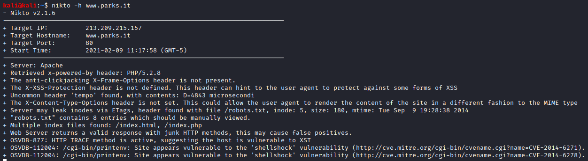
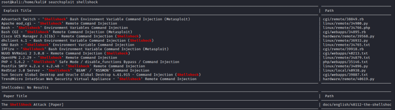

nikto
nikto is a useful to find vulnerabilities in Web Applications
root@kali# nikto -h
<
host
>

Then use Searchsploit to search for the vulnerability
root@kali# searchsploit --update
root@kali# searchsploit
<
vulnerability
>
